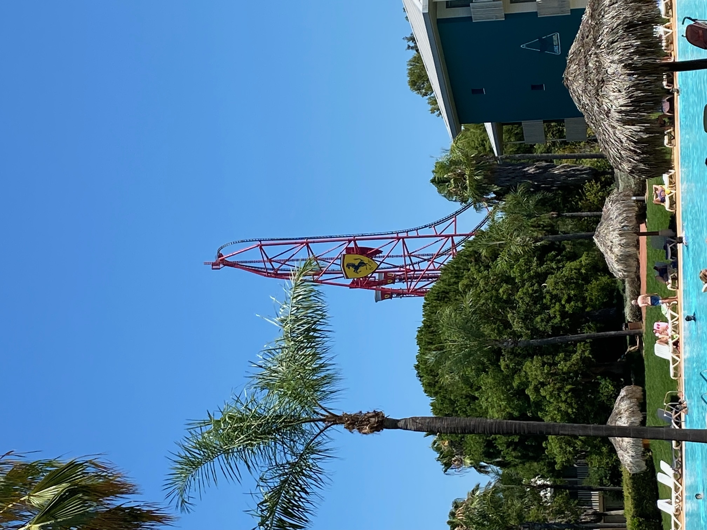

Late breakfast, thank goodness. The queue to get in and bun fight to get food was less fun. It wasn’t too bad now we are experts and know where things are. My first stop is always the coffee machine as a happy wife is a happy life.
The oldies went into Salou while the kids hung around the pool and hotel. We looked for a toy shop for Jake, mainly failed but found a half-decent shop on the walk back to our hotel. Jake always buys some Lego on holiday and we hadn’t found any Lego shops yet.
It was hot again but we are getting acclimatised now. Some of the clothes shops were a bit expensive and pretentious, but we didn’t care…as long as they had aircon. Jake went back into Salou for his Lego (a Ferrari car was the appropriate choice given the big Ferrari Land ride is visible from our hotel rooms).

All back together so into the park for the late afternoon and evening. I didn’t listen to the chat on the walk in as I was listening to the F1 Sprint (I think I need to watch the highlights of the first 30 seconds only). We hadn’t really done the Wild West and Mexico areas in the park, so that’s where went.
We happened to be going past the Wild Wild West show just as it was about to start. Jake remembered it as good last time we were here 5 or 6 years ago. Either his memory is awful or the show works better for youngsters. It was a nonsense show with average slapstick and pretty poor gay and female stereotyping.
After a boozy barrel warm-up, me and the girls went on Stampida, which is like the Grand National at Blackpool but a bit more brutal. The three of us were at the back. The second drop nearly snapped us in two.
I was pretty proud of a back-seat wooden coaster ride at nearly 50. The girls went without me for a repeat ride but on the opposing team’s track this time. They were at the back again and came off giggling.
I was broken for the night so the other four went on the runaway train, El Diablo, which was reported as long, good, alright and boring by each of the four passengers.
Time for tea in the park. We had a reservation at the Mexican table service restaurant for 19:30. The sign at the entrance said it opened at 19:45. Mmmm, a bit worrying.
Turned out nothing to worry about as we were at our table by 19:35, ordered by 19:40, trying to pay the bill by just after 20:00 and looking for some chips to fill us up from 20:05. The food was nice but not the biggest. We managed to order to the value of around €1 less than our €95 budget from not having hotel buffet, so no extra cost. And we wiped them out of their entire stock of Appletiser. We are just that kind of people.
I was keen on Templo del Fuego, a walk through story ride, like Hex at Alton Towers without the gravity swing at the end. Alison wasn’t bothered so just the four of us.
I took Freya on this last time we were here and she was terrified. Having gone back on it now, I’m not surprised as parts of it must be terrifying for a 10-year old. The climbing plasma fire on the ceiling was cool, as was Freya’s scream when the floor dropped a millimetre.
The kids did various spinny rides and I did the mirror maze with Jake and Jenny (we were quick!) before the kids did their big ride together: Hurakan Condor, which is a huge single vertical drop. Jake wasn’t keen but Jenny said she’d buy him a chocolate waffle if he rode. That worked and she honoured her promise.
Me and Alison didn’t fancy any more sitting around waiting so we walked back to the hotel while the other three did Shambala again, this time in the proper dark (it was more like dusk last night).
Our friends, Ian and Jenny, are coming to PortAventura next month and asked for tips. My top tip is don’t leave a half-eaten packet of oreo biscuits and not-quite-empty can of Pepsi while you are at the theme park if your room’s aircon doesn’t work while you are out and ants aren’t extinct by the time you get here.